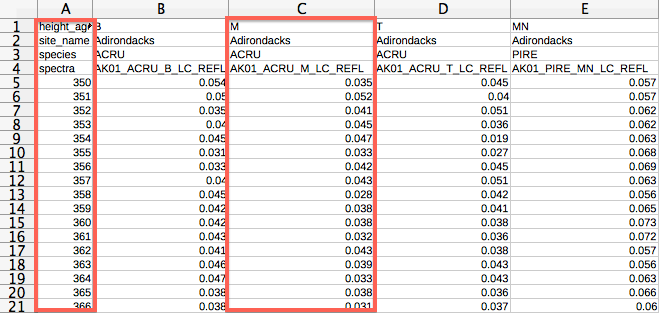
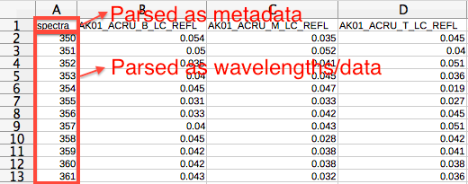

EcoSIS Tutorial
Step by step tutorial for adding datasets to EcoSIS
PI: Phil Townsend / ptownsend@wisc.edu
Developer: Justin Merz / jrmerz@ucdavis.edu
Heads Up
reveal.js is a framework for easily creating beautiful presentations using HTML (including this one). You'll need a modern browser with support for CSS 3D transforms to see it in its full glory.
Create EcoSIS Account
First your will need to create an account at data.ecosis.org
Or try the sandbox located at dev-data.ecospectra.org
Login
Make sure you are logged in before proceeding
Create Organization
Now we are going to create an organization for you or your lab.

Add a Dataset
Navigate to your newly created organization by clicking the 'Organizations' tab, then click your organziations card. You can also search for your organization by name. Finally, click '+ Add Dataset' to start the EcoSIS dataset editor.
Click your organization
Click add '+ Add Dataset'
Basic Information
In the dataset editor fill out the preliminary data for your dataset including name, description, as well as standard EcoSIS metadata fields. Make sure your description gives people a brief overview of what this dataset is.
Then click the 'Create Dataset' button at the bottom. Once the dataset is created, click the 'add resources' link or the 'Resources' left hand menu item.
Data Formats & Metadata
EcoSIS utilizes user-defined schema as well as standard EcoSIS metadata attributes. EcoSIS uses the format of your files, with some guidance, to figure out any custom schema for your dataset.
EcoSIS expects data to be uploaded with each measurement either:
- In a single column - where the first column (A) is your attribute name and the proceeding columns are the data values, including spectra
- In a single row - where the first row (1) is your attribute name and the proceeding rows are data values, including spectra
|
By Row |
 By Column |
Note: wavelengths are still considered to be an attribute name.
Advanced: You can add additional/optional formatting to your files to specify attribute type (data vs metadata), units and global metadata for a file.
- At the top of a file columns A and B can be used to define global metadata for the file with Column A being the attribute name and Column B being the attribute value. This metadata will be applied to every spectra in the file
- After the attribute name, you can add units in (). Ex: Steam Biomas (tha)
- Adding the __d postfix to your attribute name will tell the parser the attribute should be considered as data. Ex: NDVI__d
Finally, regardless of any formatting, only assign numeric attribute names to wavelengths. Data following any attribute name that is numeric will always be considered spectral data.
Add Resource Files
Select which format your files will be provided in (By Column or By Row). Then select the files you wish to upload by clicking the file selector next to 'Select File' or by dragging and dropping the files over the 'Drop files here' box.
Sample spectra and metadata files can be downloaded by clicking here and here (recommended).
Configure Datasheets
After the files have finished uploaded and being parsed by the EcoSIS you can click Resources -> Current Resources. Here you can see how the importer interpreted your files.
It's very important to look over your files and make sure everything is correct. Pay special attention to joinable metadata files as you will always need to mark these files and define how the metadata is to be joined with the rest of your data.
Configure Joinable Metadata
To edit datasheets, click the 'Pencil' icon then click the 'Joinable Metadata' checkbox.
 Before configuration After configuration |
Configure Metadata |
Metadata can be joined by
- Attribute Name: Using 'Join On' select the attribute that should be used as a unique id to join the metadata with the data.
- Filename: If you have one spectrum per file you can match the selected attribute to a filename. The 'exact match' option lets specify if the filename should be loosely matched or exactly matched to the attribute value.
- Sheetname: Similar to filename, but lets you match the selected attribute to a sheetname inside a excel file.
Inspect your datasheets to make sure they have been interpreted correctly. You can click the Pencil icon then click View Spectra. You will be able to visibly inspect each spectra parsed in the file.
Datasheet Types. Currently the following file extensions will be parsed as datasheets.
- .xls
- .xlsx
- .csv
- .tsv (Tab Separated Value)
- .spectra (parsed as .tsv)
- .zip*
*Zip files will be extracted on the server. Any files contained within the zip file that have a datasheet extension will be parsed.
Advanced Settings
There are two advanced operations that can be performed under the Advanced tab. You can map attribute names for your dataset to standard EcoSIS metadata names. You can also add a ordering to you dataset.
Map Names
Since the dataset schema is defined by the user, there are no restrictions on the names of the attributes in your dataset. That said, it's strongly encouraged that you use the EcoSIS standard names as well as the associated controlled vocabulary, if available. If you would like you can provide a mapping of your attribute names to the EcoSIS name. This way your data does not have to be directly modified but EcoSIS still understands your attributes. To do this, you download the mapping (text) file, then upload for your dataset. Note: this file can be reused for each one of your datasets.
Dataset Ordering
In the dataset section you can specify special attributes that further describe your dataset. Specifically, if your dataset has ordering (ex: the dataset is a timeseries) you can provide the field that should be sorted on as well as how that field should be interpreted.
Push to Search
At this point, everything we have done has been saved on the data management server but none of the changes have been pushed to Search, the primary interface for users to find your data. Click the Push to Search tab to start the push.
Review your dataset, then click Push to start the process. A minimum of 3 EcoSIS metadata attributes are required to push your dataset. Once the dataset is queued, you will receive a success notice but the dataset has not be pushed yet. The push process can take some time and you will be emailed when your dataset is successfully added to search.
Done :)
You will be redirect to your datasets landing page on the main EcoSIS site.